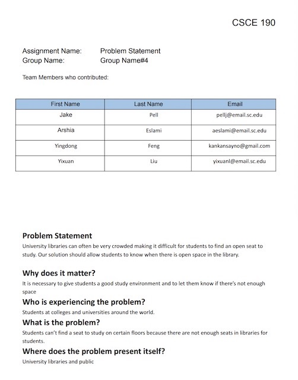
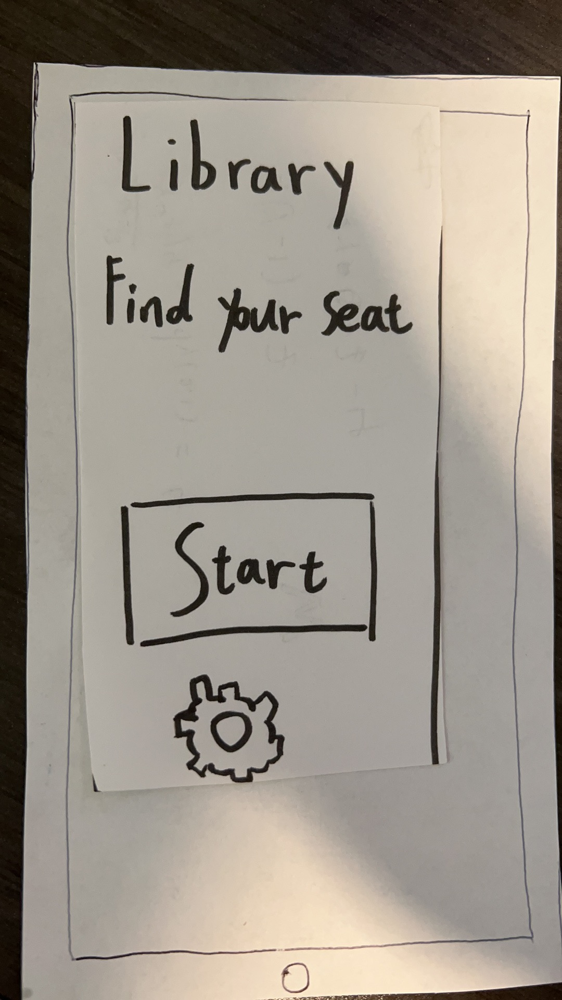

Problem Statement: Library Seats
University libraries can often be very crowded making it difficult for students to find an open seat to study. Our solution should allow students to know when there is open space in the library.
Affinity Diagram: Library Seats
My group and I were thinking together about issues such as crowded library seats and answering the questions that came to mind.
Personna: Nick Leclercq
A personna of a typical trail mix app user.
Affinity Diagram: Library Seats
This is a common problem in libraries that comes to mind, and has a solution.
Affinity Diagram: Library Seats
Ideas of how the application may look.
Paper prototype
A paper walkthrough of the potential look of every screen in the application.
hi-fi Prototype: Library Seating App

A hight fidelity prototypye